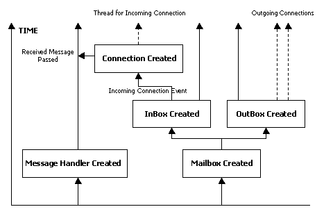

The Zeus Agent Building Toolkit |
Technical Manual |
| Contents | Introduction | Zeus Philosophy | Zeus Architecture | Communication | Coordination | Planning and Task Execution |
External Applications |
The focus of this section is on the components that implement
inter-agent communication. Communication between ZEUS agents is implemented
via point-to-point TCP/IP sockets, with each message communicated as a sequence
of ASCII characters.
This is realised through the combined actions of an agent's Mailbox and Message
Handler components, permanent threads that run concurrently for as long as the
agent is alive. The creation order and interactions between the threads of
the communication mechanism are shown in Figure 4.1, (where permanent threads
are dashed lines and transient threads are shown as dotted lines).

Figure 4.1: A timeline of the active threads of the Zeus Communication Mechanism
The Mailbox is responsible for creating and reading TCP/IP sockets to send and receive messages. It maintains two independent threads of activity: one, a reader thread, continually listens for incoming socket connections. When one is detected it will create a new transient thread to read the message and deliver it to the Message Handler, which will process it. This approach delegates responsibility for reading messages to the new connection thread, leaving the main 'InBox' thread free to continue listening for incoming messages, (thus enabling several messages to be received simultaneously). When the incoming message is read, the connection thread terminates.
The other Mailbox thread is the 'OutBox'. When this is given a message to dispatch it creates a transient thread to open a socket to the recipient. If the connection is made the message is then streamed down the socket, and when finished the writer thread terminates. Again this approach means an agent can dispatch more than one message at a time.
The writer thread of the Mailbox continually checks a priority FIFO outgoing-message-queue for messages to dispatch. For each message awaiting dispatch, it queries the message object for the intended recipient, and looks up a local address book for the recipient’s address. If the address is found, the writer opens a network socket connection to the agent at the specified address. Next, it serialises the message object as an ASCII sequence onto the network connection. If the recipient’s address is not found, the writer stores the message object onto a holding buffer, and queries known NameServer agents for the required address. This embedded query utilises recursively the same Mailbox and Message Handler functionality. Once the message recipient’s address is received, the writer removes the relevant message from the holding buffer and proceeds to dispatch the message. In the event that no address is found or network communications fails, a suitable error message is generated, which the writer adds to the reader’s incoming-message-queue to be processed as a normal incoming message.
Why TCP/IP?
TCP/IP was deliberately chosen as the transport protocol for ZEUS messages, in preference to object-oriented middleware solutions like CORBA. As the lowest common denominator, the transport protocol used will ultimately dictate the portability of the agents. Hence our rationale was to choose the most ubiquitous standardised protocol, and for the foreseeable future that is likely to be TCP/IP. It also has the additional advantage of being lightweight, meaning we could implement functionality in the agent layer rather than having to rely on services in the transport layer: the facilitator agent provides a good example.
As all aspects of ZEUS agent communication are encapsulated inside the Mailbox, it would be perfectly possible to replace the TCP/IP mechanism with a middleware alternative, should that be felt necessary.
Messages sent through sockets are received message as a stream of ASCII characters, which are then parsed into a Performative object and queued onto a priority FIFO incoming-message-queue[1]. Performatives form the basis of the most inter-agent communication languages, and those used in ZEUS are explained next.
Most agent communication languages (ACLs) are based on speech act theory [6], wherein human utterances are viewed as actions in the sense of actions performed in the everyday physical world (e.g. picking up a block). Hence, ACLs specify message types called performatives, such as ask, tell, or achieve, which by virtue of being sent from one agent to another, are assumed to effect some illocutionary actions in the receiving agent.
Obviously, inter-agent compatibility will be impossible until all parties adopt the same agent communication language, and fortunately ACL standards do exist. All ZEUS agents communicate using messages that obey the FIPA 1997 ACL specification, which is described here.
The syntax of this language is included in the ZEUS toolkit in the file zeus/concepts/Performative.jj, which is used by the agent's internal parser to formulate and decode messages. This syntax is used to construct instances of the Performative class, which have the following attributes:
|
Performative( type: /* performative type, e.g. inform, cancel etc. */ sender: /* name of agent sending message */ receiver: /* name of intended recipient agent */ reply_with: /* sender’s conversation identification key */ in_reply_to: /* recipient’s conversation key */ content: /* message content */ language: /* name of language in which content is expressed */ address: /* sender’s address */ send_time: /* time at which message is sent */ receive_time: /* time when message is received */ ) |
Figure 4.2: The attribrites of the performative class
The first field of a performative message - its type - refers to the action the recipient is being asked to perform; this can be one of the following:
|
Message Type |
Purpose |
|
Accept-proposal |
Used in the context of an existing dialogue to inform the recipient that a prior proposal has been accepted |
|
Agree |
Signals acceptance of facts asserted within the message |
|
Cancel |
Causes the recipient's MailBox and ExecutionMonitor to stop streaming reports to the originator |
|
Cfp |
Invites the recipient to make an offer concerning a specified resource |
|
Confirm |
Confirms the reservation of a resource |
|
Disconfirm |
Retracts a previously made conformation |
|
Failure |
Terminates a dialogue when the originator can no longer continue |
|
Inform |
Causes the recipient to add the associated content to its Resource Database |
|
Inform-if |
A conditional version of Inform |
|
Inform-ref |
Causes recipient to add some referenced content to its Resource Database |
|
Not-understood |
A more specific case of Failure |
|
Propose |
Encapsulates a proposal for achieving or buying a specified resource |
|
Query-if |
A conditional request for information |
|
Query-ref |
A request for information referenced by the message contents |
|
Refuse |
Terminates a dialogue, usually because the originator considers proposals have been unacceptable rather than unobtainable (cf. Failure) |
|
Reject-proposal |
Used in the context of an existing dialogue to inform the recipient that a prior proposal is unacceptable |
|
Request |
Asks the recipient to provide some resource or service |
|
Request-when |
A conditional version of Request |
|
Request-whenever |
A time conditional version of Request |
|
Subscribe |
Registers the originator, typically used to register with utility agents such as the Name-Servers and Visualisers |
Table 4.1: The Message Types present within ZEUS Performatives
Performatives tend to originate from the states of dialogue nodes, (which are described in the next section) or from the firing of rules that have a communication effect. Incoming performatives are then processed by the other component of the communication mechanism: the Message Handler, this is described next.
The Message Handler is a ZEUS agent’s internal mail sorting office, continually checking the incoming-message-queue of the Mailbox for new messages, and forwarding them to the relevant components of the agent. Its behaviour is controlled by two factors: first, whether a new message represents the start of a new dialogue or it is part of an existing dialogue; and second, on message processing rules registered in the Handler by other components of the agent.
New dialogues
For new dialogues, identified by messages with a null in-reply-to field in the message object, processing is governed solely by the rules registered with the Handler. The rules take two basic forms, object rules and engine rules:
|
Object Rules |
Message-pattern -> action-type object-reference method-name |
|
Engine Rules |
Message-pattern -> action-type fully-qualified-graph-name |
Where message-pattern is a partial description of a message performative that gets matched against the new incoming message object, object-reference is a Java object and method-name is the name of a public method of the object referenced by object-reference.
The action-type can be set to either EXECUTE_ONCE or EXECUTE_MANY. Whereas the rule is deleted from the Message Handler after execution in the case of EXECUTE_ONCE, it is retained after execution in the case of EXECUTE_MANY. The fully-qualified-graph-name is a string reference to the qualified name of one of the Co-ordination Engine graphs (described in the next section).
For object rules, new messages are matched against the message-pattern, with successful matches resulting in the method method-name of the object referenced by object-reference being invoked with the new message object as its input argument. The invocation mechanism is based on Java reflection. Object rules are intended to implement short-lived and simple reactive behaviour, for example automatic responses to requests for information.
For engine rules, a successful match of the incoming message against the message-pattern results in a call to the Co-ordination Engine to launch the graph referenced by the fully-qualified-graph-name with the message object as its input argument. Engine rules are intended for long-lived and/or complex behaviour such as requests to achieve a particular goal, which might lead to planning, negotiation with other agents and plan execution and monitoring. The generic ZEUS agent has some predefined object and engine rules for dealing with standard messages such as requests for information or requests to achieve goals.
Continuation dialogues
For continuation dialogues, the default behaviour of the Message Handler is to forward new messages to the Co-ordination Engine (which as described later, provides a mechanism for managing long-lived dialogues). However, this default behaviour can be overridden by object rules of the form
reply-message-pattern -> action-type object-reference method-name
where reply-message-pattern is a message-pattern with a non-null value of its in-reply-to field. Thus, if a message matches the reply-message-pattern of a rule, then the rule is invoked as described earlier; otherwise, the default behaviour of forwarding the message to the Co-ordination Engine is applied.
Thus support for the declarative specification of behaviour in the Message Handler is provided through the use of pattern-action rules. This allows the processing behaviour of the Message Handler to be modified, even at runtime, simply by adding new processing rules or deleting existing ones.
[1] Most of the queues used in the ZEUS implementation were designed as blocking queues. When a blocking queue is empty, any thread trying to remove an element from the queue blocks until another thread adds an element into the queue.
| Contents | Introduction | Zeus Philosophy | Zeus Architecture | Communication | Coordination | Planning and Task Execution |
External Applications |